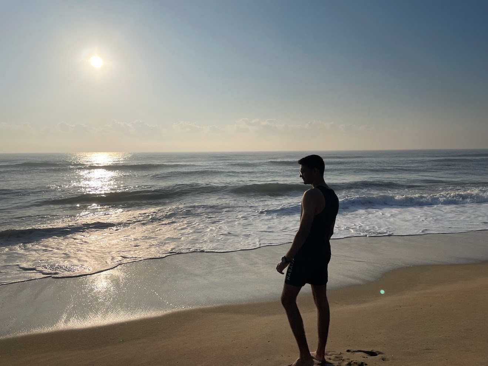

About
Engineer by degree. Builder by habit.
I'm Harsh Talnikar, a civil engineering student at NITK Surathkal with a minor in Economics. I build software, produce music and play tennis. The common thread is that I start from a real problem and keep going until someone actually uses the thing.

What I'm after
Product, growth or a founder's office. I want a summer internship at an early-stage company where I can see how good companies are really built, from the inside, and be useful quickly.
Why not just stay in civil? I like civil engineering and I'm doing real research in it. But I've shipped multiple apps and a client website, and the part I enjoy most is deciding what to build and watching whether people use it. I'm aiming that at products rather than services, with a company of my own as the long-term goal.
How I build. I use AI coding tools (Claude Code, Cursor, Google Antigravity) heavily. I treat them as a way to prototype fast. I decide what the product is, test it on real phones, and own what ships.
Timeline
Rainwater harvesting research · NITK
Pitched a proposal to use rooftop rainwater for hostel toilet flushing across campus. A professor took it up for further study. I'm now looking at ways to store rainwater for Surathkal's dry summers.
Freelance web design · Tattoo studio
Designed, built, deployed and optimized a site for a tattoo studio, as the sole point of contact. Took it to a 90 PageSpeed score and full Google indexing, and set up the Google Business Profile.
Flex AI
A Flutter fitness app that uses Gemini to generate structured multi-day workout plans.
MediCart
An offline-first billing app for a private medical practitioner, who uses it daily.
SIG Coordinator, Business & Finance · Institution of Engineers, NITK
Ran a financial and ESG analysis of H&M Group for a competitive case study, with a cost-benefit model across the supply chain and sustainability initiatives.
Active member & producer · NITK Music Club
Produced and published original compositions across genres on streaming platforms. Also ran promotion and cross-platform outreach for Battle of Bands at NITK.
Vice-captain · NITK Lawn Tennis
Helped lead the team to Runners-Up at the Inter-NIT Lawn Tennis Tournament, and was named Man of the Match in the semi-final.
B.Tech Civil Engineering · NITK Surathkal
Minor in Economics. Coursework includes Structural Analysis, Microeconomics, Macroeconomics, Engineering Math and Python.
Toolbox
- Languages: C++, Java, Python, SQL, Dart
- Build: Flutter, Firebase, Riverpod, Hive, Gemini API
- AI-assisted dev: Claude Code, Cursor, Google Antigravity
- Analysis: Excel, Tableau
Off the clock
Tennis. I've played for 12 years and I'm vice-captain of the NITK team. It taught me more about pressure and leading a team than any classroom has.
Music. I produce original tracks and have two releases on Spotify. Listen here →